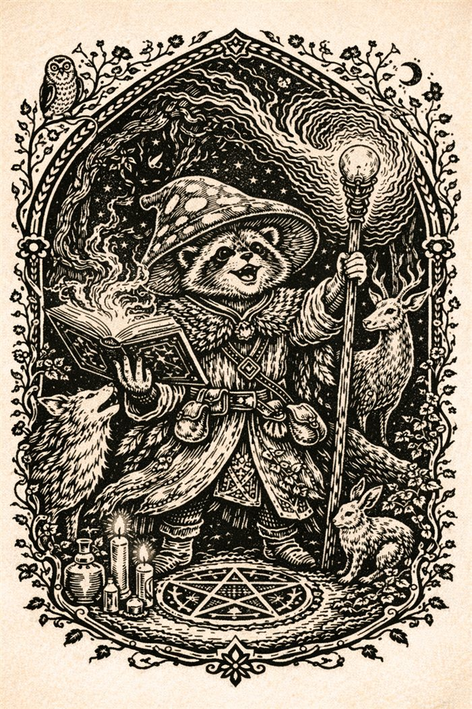

The Party

Pip
Race · Class · Level
A small scholar with big ambitions and even bigger sleeves. Pip's grimoire smokes when opened, which is either a feature of the magic or a warning from it — the literature is divided.
Notable deeds
- To be recorded as the campaign unfolds.
✦ ❦ ✦

Luna
Race · Class · Level
Keeper of the cauldron and reader of star-bound recipes. Luna's brews have never failed — though the definition of "success" is negotiated on a case-by-case basis with whoever drinks them.
Notable deeds
- To be recorded as the campaign unfolds.